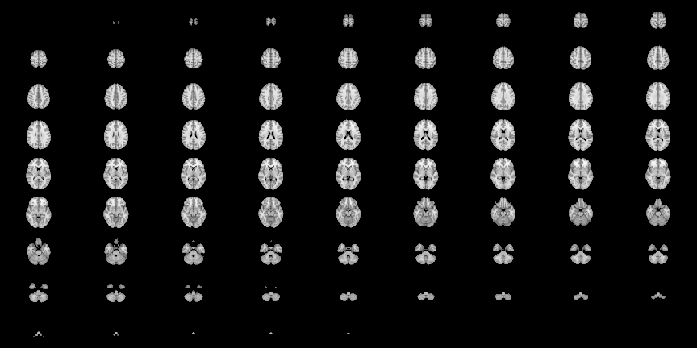
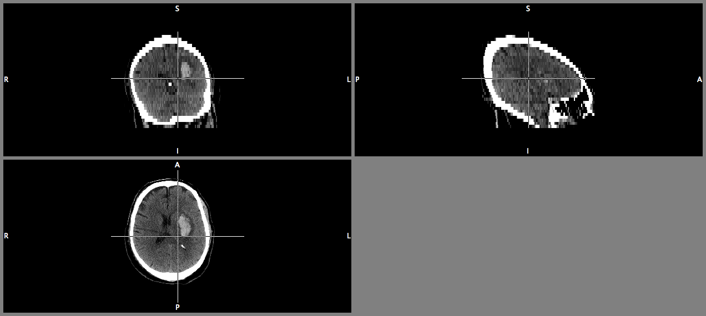
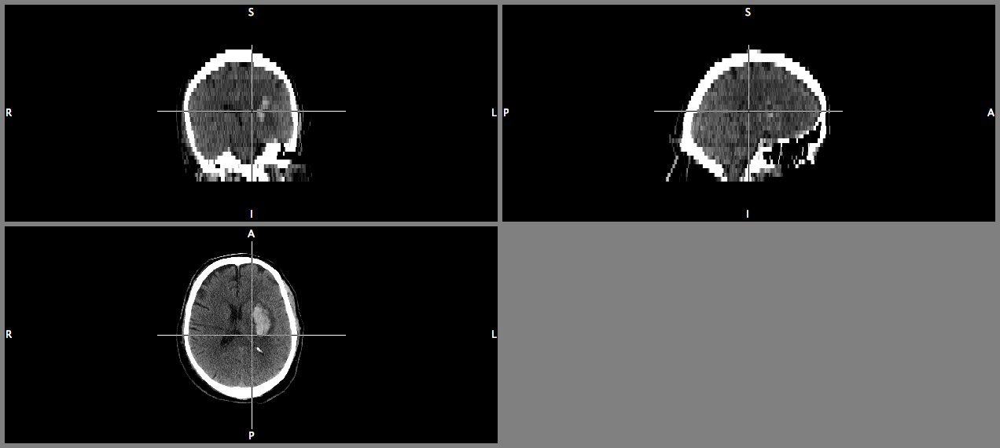
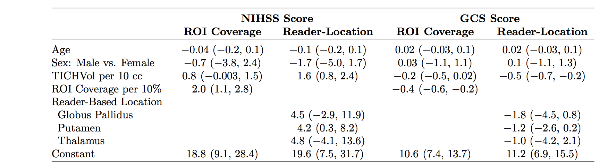
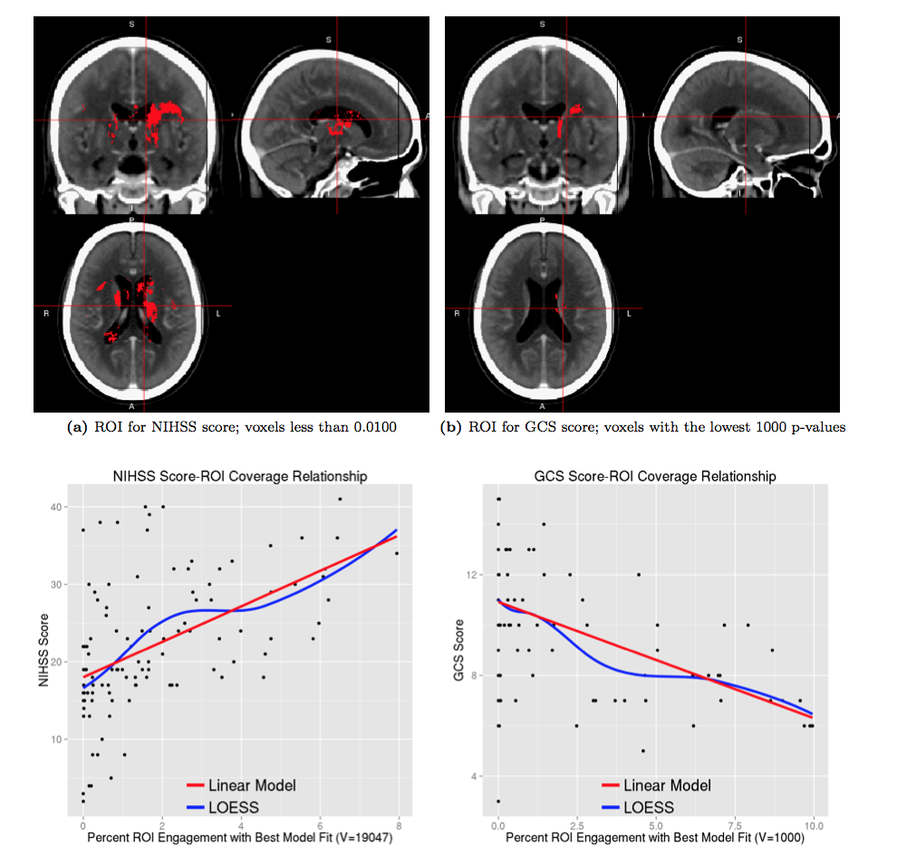
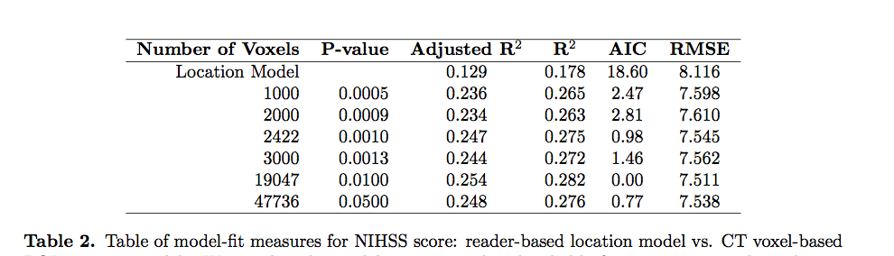

- Develop a pipeline to register patient CT scans to a CT template
- Create a 3-dimensional (3D) density map of hemorrhages from MISTIE/ICES
- Quantify of hemorrhage engagement of regions in the brain
- Determine if differences in location relate to NIHSS and modified Glasgow Coma Scale (GCS)
- Generate a stroke region of engagement (ROI) using within-sample validation.
Localization in ICH
A CT Imaging Pipeline
John Muschelli
Johns Hopkins Bloomberg School of Public Health
Goals
Neuroimaging Data - voxels = 3D pixels


DICOM - slicing a salami

NIfTI - a 3D brain!
Note the Gantry tilt - (cone heading)

Gantry Tilt - It's a Brain!

Brain Extraction!


Registration
- Chris Rorden has released a Clinical Toolbox
- Has a CT Template!
- Uses SPM to do spatial co-registration "Normalization".
- Must mask out the lesion / stroke.
- MISTIE and ICES - 111 patients
Registered Images and Masks


Population ICH


Voxel-wise Regression
\[
Y_i = \beta_0+\beta_1(v) + \epsilon_{iv},
\]

Regressing on ROI Coverage
\[ {\rm NIHSS}_i = \beta_0 + \beta_1 {\rm Coverage}_i + \gamma_1{\rm Age}_i +\gamma_2{\rm Gender}_i +\gamma_3{\rm TICHVol}_i + \epsilon_{i} \]
\[ {\rm GCS}_i = \beta_0 + \beta_1 {\rm Coverage}_i + \gamma_1{\rm Age}_i +\gamma_2{\rm Gender}_i +\gamma_3{\rm TICHVol}_i + \epsilon_{i} \]

Regressing on ROI Coverage

Results for NIHSS
\[ {\rm NIHSS}_i = \beta_0 + \beta_1 {\rm Coverage}_i + \gamma_1{\rm Age}_i +\gamma_2{\rm Gender}_i +\gamma_3{\rm TICHVol}_i + \epsilon_{i} \]

Results for GCS
\[ {\rm GCS}_i = \beta_0 + \beta_1 {\rm Coverage}_i + \gamma_1{\rm Age}_i +\gamma_2{\rm Gender}_i +\gamma_3{\rm TICHVol}_i + \epsilon_{i} \]